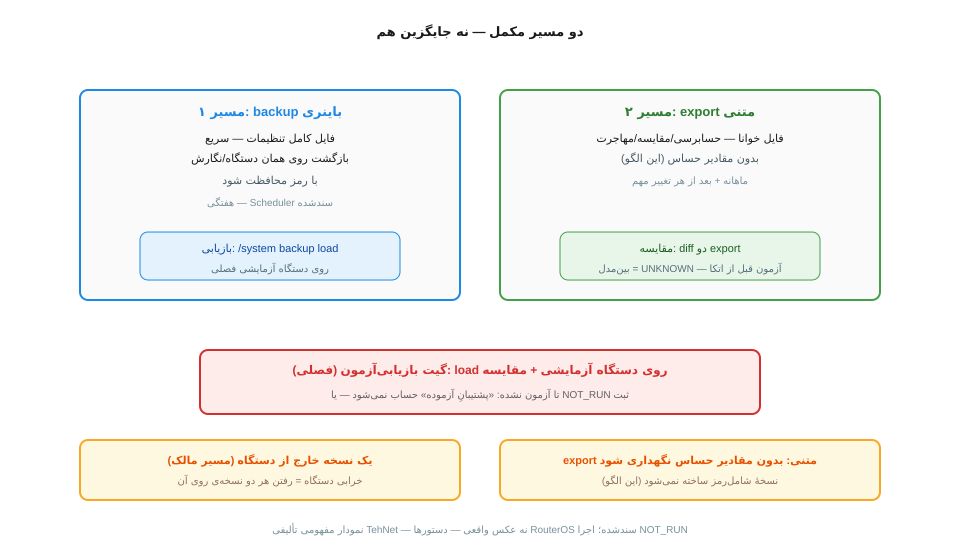

وضعیت درس: DRAFT / NOT_DEPLOYED — در انتظار مرور.
آموزش تصویری از سری پشتیبانی؛ مخاطب: کارشناس شبکه.
سناریوی کاملاً فرضی و آموزشی با دادهٔ ساختگی؛ هیچ شبکهٔ واقعی دستکاری نشده و هیچ اجرای واقعی NOT_RUN است.
نمودار مفهومی و تألیفی است (نه عکس واقعی).
دو ابزار مکملاند نه جایگزین هم: backup (فایل باینری کامل، سریع برای بازگرداندن روی همان دستگاه/نگارش) و export (فایل متنی خوانا برای حسابرسی، مقایسه و مهاجرت). هیچکدام بهتنهایی «پشتیبان» نیستند تا یکبار بازیابیآزمون شوند (قاعدهٔ درس N2). نسخهها را تاریخدار نگه دارید، یک نسخه را خارج از دستگاه نگه دارید و بهخاطر داشته باشید export میتواند شامل رمزها باشد — نگهداریاش امن، مثل خود رمز.
| بند | مقدار فرضی |
|---|---|
| دستگاه | hEX (RB750Gr3)، RouterOS v7.16+ (مبناى M3) |
| فایل backup | `hex-backup-YYYY-MM-DD.backup` با رمز (فرض آموزشی) |
| فایل export | `hex-export-YYYY-MM-DD.rsc` متنی |
| نگهداری نسخهها | روی دستگاه (پوشهٔ فایلها) + یک نسخهٔ خارج از دستگاه (درایو/سرویس نگهداری فایل مالک — خارج دامنهٔ این درس) |
| زمانبندی | backup هفتگی خودکار با Scheduler + export ماهانه دستی/زمانبندیشده + export فوری بعد از هر تغییر مهم |
| بند | backup (باینری) | export (متنی .rsc) |
|---|---|---|
| ماهیت | تصویر کامل تنظیمات | فرمانهای بازسازی تنظیمات بهصورت متنی |
| بهترین کاربرد | بازگشت سریع روی همان دستگاه/نگارش | حسابرسی، مقایسهٔ نسخهها، مهاجرت، مستندسازی |
| خوانایی | غیرقاملمطالعه | خوانا و قابلdiff |
| رمزها | فایل با رمز محافظت میشود (`password=`) | بهصورت پیشفرض مقادیر حساس حذف میشوند؛ با پارامتر حساسنما شامل میشوند — این درس فقط نسخهٔ حذفشده تولید میکند و نسخهٔ شاملرمز را نمیسازد |
| وابستگی | به مدل/نگارش RouterOS حساستر | عمومیتر؛ برخی تنظیمات وابسته به سختافزار ممکن است روی مدل دیگر معنی ندهد — UNKNOWN برای هر مهاجرت بینمدل؛ قبل از اتکا، بازیابیآزمون |

شرح متنی نمودار (جایگزین تصویر برای دسترسپذیری): دو مسیر مکمل کنار هم: مسیر اول backup باینری رمزدار (هفتگی با Scheduler؛ کاربرد: بازگشت سریع روی همان دستگاه؛ بازیابی از طریق `/system backup load` روی دستگاه آزمایشی در آزمون فصلی) و مسیر دوم export متنی بدون مقادیر حساس (ماهانه؛ کاربرد: حسابرسی، مقایسه با diff، مهاجرت با هشدار UNKNOWN بینمدل). زیر این دو، گیت قرمز «بازیابیآزمون فصلی» آمده: تا load روی دستگاه آزمایشی و مقایسه انجام نشده، پشتیبان «آزموده» حساب نمیشود و صادقانه NOT_RUN ثبت میگردد. دو جعبهٔ زرد پایین: یک نسخه خارج از دستگاه (چون خرابی دستگاه هر دو نسخه روی آن را میبرد) و نگهداری امن export بدون مقادیر حساس. برچسب «تألیفی/مفهومی».
دستورهای مبنا (اجرا NOT_RUN):
# backup هفتگی — با رمز؛ تاریخ در نام
/system backup save name="hex-backup-2026-11-16" password="********" comment="TN-N5 weekly"
# export متنی ماهانه — بدون مقادیر حساس
/export file="hex-export-2026-11-16"قابلیت Scheduler بخشی از RouterOS است (در این درس فقط نام قابلیت؛ URL بخش مستندات جداگانه تأیید نشده و عیناً ساخته نشده — الگوی صادقانهٔ S2). نمونهٔ الگو (اجرا NOT_RUN):
/system scheduler
add name=tn-n5-weekly-backup interval=7d on-event="/system backup save name=\"hex-backup-auto\" password=\"********\" comment=\"TN-N5 auto\"" start-time=03:30:00 comment="TN-N5 weekly"| مسیر | دستور مبنا | محدودیت سندشدهوار |
|---|---|---|
| بازگرداندن backup | `/system backup load name="hex-backup-..." password="****"` | بهترین بازگشت روی همان دستگاه و نگارش نزدیک |
| اعمال export روی دستگاه تازه | import فایل rsc از File list | UNKNOWN بینمدل؛ قبل از اتکا: آزمون روی دستگاه آزمایشی |
رویهٔ آزمون بازیابی (فصلی — قاعدهٔ N2): فایل backup را روی دستگاه آزمایشی (نه روتر تولید) با نگارش نزدیک load کنید، سپس مقایسهٔ export دستگاه آزمایشی با export اصلی — تطبیق ساختار = آزمون موفق. اگر دستگاه آزمایشی ندارید، آزمون انجام نشده است و صادقانه NOT_RUN ثبت میشود؛ فایل پشتیبانِ بدون آزمون را «آزموده» ننویسید.
| خطا | چرا گران است | درست |
|---|---|---|
| فقط backup و هرگز export | حسابرسی/مقایسه/مهاجرت ناممکن میشود | هر دو، هفتگی/ماهانه |
| export شاملرمز روی اشتراکفایل | فایل متنیِ شامل رمز = لو رفتن رمز | export بدون حساسها برای نگهداری متنی |
| backup روی همان دستگاه بهعنوان «خارج» | خرابی دستگاه = رفتن هر دو نسخه | یک نسخه واقعاً خارج دستگاه |
| بازیابی بینمدل بدون آزمون | UNKNOWN بینمدل | آزمون روی دستگاه آزمایشی قبل از اتکا |
| نام فایل بدون تاریخ | ناآگاهی از کهنه/تازه بودن | تاریخ در نام + comment |
| پیوند | مقصد |
|---|---|
| درسهای مرتبط | N2 نگهداری دورهای · N4 پذیرش تحویل · M3 مبنا |
| نقشهٔ کامل سری | topic map |
| نگهداری و پشتیبانگیری شبکهٔ شما | خدمات پشتیبانی شبکهٔ تهران |
| درس بعدی سری | N6 — مسیر رخداد و تشدید (تولید در نوبت بعدی؛ فعلاً فقط در topic map) |